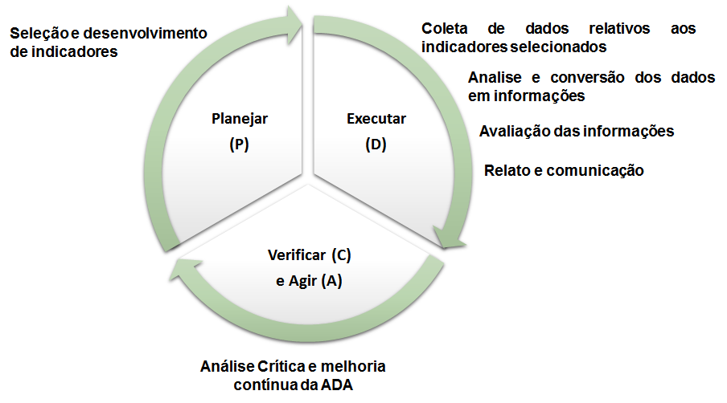

3. Referencial Teórico
O desempenho organizacional sempre exerceu influência sobre as ações e atividades das empresas. Nesse contexto, as formas e os meios necessários para medir esse desempenho são vistos como um campo cada vez mais importante a ser investigado, tanto pelas organizações quanto pelos acadêmicos, devido o seu importante papel como um elemento para a gestão eficaz e eficiente das organizações (FOLAN e BROWNE, 2005; KENNERLEY e NEELY, 2002).
Para que organizações sejam, de fato, competitivas, são necessárias que elas atendam as necessidades dos seus stakeholders. De acordo com Donaire (2010):
dentre as exigências da sociedade, com relação às atividades organizacionais, a preocupação com o meio ambiente ganha cada vez mais destaque, em função de sua relevância para a qualidade de vida da população, exigindo, portanto, das empresas um novo posicionamento em sua interação com o meio ambiente.Os SGAs têm sido uma das alternativas mais utilizadas pelas organizações, objetivando alcançar objetivos estratégicos de integração de atividades de preservação e de construção de vantagem competitiva com base em gestão ambiental.
Um dos setores de elevada importância econômica para o país é o da construção civil, pois, conforme Oliveira e Oliveira (2012) afirmam:
tal setor contribui para a geração de empregos, o desenvolvimento regional e mudanças para a economia, tendo em vista a sua participação no Produto Interno Bruto (PIB), seu considerável nível de investimentos e seu efeito multiplicador sobre o processo produtivo.Não obstante, esse mesmo setor se caracteriza como grande gerador de impactos ambientais. O modelo de construção civil praticado no Brasil, em toda a sua cadeia produtiva, ocasiona vários prejuízos ambientais, pois, além de utilizar, de forma ampla, matéria-prima não renovável e consumir elevadas quantidades de energia, é também perdulário no uso dos materiais, e considerado grande fonte geradora de resíduos na sociedade. Posto isto, tendo em vista o desenvolvimento sustentável amplamente discutido e que as questões ambientais passaram a integrar o planejamento estratégico das empresas e sabendo-se que os indicadores ambientais são importantes ferramentas que mostram os resultados das ações das empresas em prol do meio ambiente (LIMA; COSTA; ANGELIS, 2008). Voltar ao Sumário
3.1. Desenvolvimento sustentável na indústria de construção
Ao longo da história humana, é possível identificar uma série de personagens históricos associados as questões que envolvem a problemática interação das pessoas com o meio ambiente em que habitam. Porém, o tema só se tornou de interesse global nos anos 1970, após o surgimento de uma crise mundial relacionada a exaustão do meio ambiente.
O primeiro evento relacionado a problemática ambiental a ganhar projeção mundial foi a Conferência das Nações Unidas para o Meio Ambiente, realizada em 1972, em Estocolmo. é considerada um marco histórico político internacional, sendo decisiva para o aparecimento de políticas de gestão ambiental, direcionando a atenção das nações para as questões ambientais (PASSOS, 2009).
No relatório Brundtland foi inserido o conceito do desenvolvimento sustentável, podendo ser definido como a capacidade de atender as necessidades econômicas, ambientais e sociais da geração presente, sem comprometer a capacidade das gerações futuras de atenderem as suas (ONU, 1972).
A Agenda 21, elaborada durante a RIO 92, estabelece que a conservação do meio ambiente e o direito ao desenvolvimento estejam intrinsecamente relacionados, possibilitando ao mesmo tempo o direito à renda e a um meio ambiente saudável. No Brasil, a Agenda 21 propõe a aplicação progressiva de conhecimentos científicos e tecnológicos, utilizando a multidisciplinaridade de conhecimentos em prol do desenvolvimento sustentável (BRASIL, 1994).
Como consequência, em 1999, foi publicada uma agenda intitulada Agenda 21 on Sustainable Construction, de autoria do International Council for Research and Innovation in Building and Construction (CIB). O documento visa consolidar outras publicações relacionadas ao desenvolvimento sustentável a fim de padronizar a fim de padronizar a estruturação de futuras agendas nacionais, locais e setoriais (DEGANI, 2003).
De fato, em diversos capítulos da Agenda 21 global é possível observar referências a indústria da construção. Por exemplo, o capítulo 7 da Agenda 21 aborda especificamente temas relacionados a sustentabilidade na construção, trazendo tópicos como a promoção integrada de infraestrutura ambiental (saneamento básico, abastecimento de água, gestão de resíduos), promoção de atividades de construção sustentáveis, e promoção do desenvolvimento de recursos humanos e capacidade de construção para desenvolvimento de assentamento humanos (CIB, 1999).
Ainda hoje existem discrepâncias entre a forma ideal de desenvolvimento sustentável e a aplicada atualmente, por causa de dificuldades práticas na realização dos conceitos de sustentabilidade.
Um dos maiores desafios em se implantar medidas sustentáveis na indústria da construção é que a maioria das atividades de construção são executadas por uma equipe de projeto de construção que tem características temporárias, sendo dissolvida tão logo o projeto seja concluído. Essa característica dificulta o aprendizado de experiências passadas e compartilhamento de conhecimento entre os principais atores (YUSOF et al., 2016). Com isso, não é surpreendente que a indústria da construção tenha progredido pouco em termos de desempenho ambiental, e o número de projetos que adotam a sustentabilidade é limitado.
De acordo com Zhang, Wu e Shen (2014):
a integração das dimensões ambiental, econômica e social nos comportamentos corporativos tem sido uma estratégia valiosa para as empresas de construção determinar seu desempenho e aumentarem sua competitividade em longo prazo.
Outras novas medidas, como as políticas governamentais, incentivos para que as empresas de construção adotem características "verdes" e sistemas de gestão ambiental (SGA), incluindo a ISO 14000, foram introduzidas para implementar a gestão ambiental (LAM et al., 2010).
Voltar ao Sumário3.2. Impactos produzidos na construção civil e instalação industrial
Se tratando de impactos ao meio ambiente, as atividades de construção comumente provocam poluição, do ar, água e solo, ruído e grande geração de resíduos. A extração de recursos naturais no processo de desenvolvimento de um projeto de construção pode alterar as características ecológicas dos terrenos. O desmatamento e recuperação de terrenos para o desenvolvimento de novos projetos de construção pode mudar o ambiente, afetando diretamente espécies da fauna e flora local, que podem não sobreviver (ABIKO, 2009).
De acordo com a OECD (2017), as indústrias da construção e manufatura foram responsáveis por 15,7% das emissões de gases de efeito estufa pelos países da União Europeia participantes em 2012. Já European Statistic (2015) afirma que 32,6% de todo resíduo gerado pelos países da União Europeia no ano de 2012 são provenientes de atividades da construção, enquanto que no Brasil a geração de resíduos da construção representa 35,9% do total de resíduos sólidos gerados em 2015 (ABRELPE, 2015).
A indústria da construção difere de outros setores produtivos devido a diversidade na natureza dos projetos, variedade de padrões de projeto, de práticas de construção e requisitos operacionais, e, principalmente, devido às grandes áreas de influência (UGWU et al., 2006).
Pode-se afirmar que o ambiente construído contribui muito para o consumo de energia e água, emissões de gases de efeito estufa, e geração de resíduos. O método pelo qual o processo de construção é implantado e gerenciado, e a forma como ele contribui para a vida diária do ser humano, tem impactos importantes sobre o meio ambiente.
Além disso, uma quantidade significativa de energia é incorporada em vários materiais de utilizados na construção e componentes fabricados. As atividades no local de construção também consomem energia para iluminação, ferramentas, maquinário, e outras instalações.
Embora projetos de infraestrutura tenham a capacidade de produzir efeitos de desenvolvimento para as cidades, eles têm sido alvos de críticas generalizadas em torno de aspectos e impactos de sua implantação, incluindo: os elevados riscos que envolvem; atrasos no cronograma de execução de obras; faltam de responsabilização, transparência e participação das organizações; e os impactos ambientais e sociais negativos. Eles também são criticados por suas previsões imprecisas de custos e benefícios; integração deficiente nos processos urbanos e nos sistemas de planejamento mais vastos; falta de consideração de alternativas; bem como o desvio de dinheiro de outros usos (HANNAN; SUTHERLAND, 2014).
Portanto, é evidente que projetos são capazes de proporcionar uma variedade de benefícios para as cidades, porém se não houver uma gestão eficiente do meio ambiente geram uma gama de despesas associadas aos impactos ambientais (como multas, embargos, gastos com passivos ambientais etc). Existe a necessidade de incorporar os princípios da sustentabilidade nas políticas e no planejamento desses projetos, para enfrentar os conflitos e as relações que surgem no processo de desenvolvimento urbano e industrial.
Voltar ao Sumário3.3 Avaliação de Desempenho Ambiental (ADA)
A norma NBR ISO 14031:2015 define desempenho ambiental como sendo os resultados mensuráveis da gestão dos aspetos ambientais de uma organização, podendo ser medidos com base na política ambiental, objetivos ambientais e metas ambientais da organização e outros requisitos de desempenho ambiental.
A Norma NBR ISO 14031:2015, assim como outras normas de gestão, segue um modelo de gestão PDCA (Plan - Do - Check - Act), podendo ser descrito conforme Figura 1:
Figura 1 - Ciclo PDCA aplicado a Avaliação de Desempenho Ambiental 
Fonte: adaptado da norma NBR ISO 14031:2015.
As informações geradas pela ADA possibilitam a melhoria contínua da gestão do meio ambiente nas organizações, por exemplo:
- Ajudando a identificar e avaliar melhor seus aspectos ambientais;
- No estabelecimento de objetivos e metas para melhorar o desempenho ambiental;
- Identificando oportunidades para uma melhor gestão dos aspectos ambientais;
- Identificando tendências no desempenho ambiental da organização;
- Avaliando o cumprimento de requisitos legais e outros relativos aos seus aspectos ambientais.
A ADA permite que as organizações possam comparar seu desempenho ambiental passado e presente com seus objetivos e metas ambientais através do uso de indicadores-chave de desempenho (ICD), com base em informações confiáveis e verificáveis. As organizações então medem, avaliam e comunicam o seu desempenho ambiental a seus stakeholders (ABNT, 2015).
A ADA é aplicável tanto a pequenas e grandes empresas, podendo ser utilizada para apoiar um SGA, ou de forma independente. Uma organização com um SGA implantado pode avaliar o seu desempenho ambiental contra a sua política ambiental, objetivos, metas e outros objetivos de desempenho ambiental (ABNT, 2015).
Voltar ao Sumário3.4. Desempenho eficiente, eficaz e efetivo
A adoção de um sistema de indicadores favorece o alinhamento dos objetivos e metas ambientais às estratégias da organização, auxiliando a empresa a estabelecer o grau de evolução ou estagnação de seus processos, fornecendo informações adequadas para que possam ser tomadas ações preventivas e/ou corretivas em busca das metas e objetivos estabelecidos por ela, visando resolver, melhorar ou manter o desempenho ambiental da empresa.
Porém a implantação de um sistema de gestão ambiental, por si só, não significa que a empresa esteja realizando um gerenciamento efetivo.
As informações geradas na ADA permitem a organização analisar criticamente e melhorar a eficiência e eficácia de seu desempenho através de uma melhor gestão dos aspectos ambientais, de seus riscos e efeitos significativos sobre o meio ambiente resultantes de atividades organizacionais, garantindo assim um desempenho ambiental efetivo.
3.4.1. Eficácia e Eficiência
Estes são dois conceitos muitos antigos, mas implacavelmente atuais. Principalmente nos dias de hoje não os compreender ou, o que é muito pior, confundi-los provoca, sem dúvida, grandes danos ao desempenho e aos resultados.
As diferenças entre esses dois conceitos podem até parecer sutis, mas realmente são extremamente importantes. Peter Drucker (2010) é enfático em afirmar: eficiência é fazer certo as coisas, eficácia são as coisas certas. E complementa que o resultado depende de “fazer certo as coisas certas”.
EFICIÊNCIA é fazer certo; é o meio para se atingir um resultado; é a atividade, ou, aquilo que se faz. A eficiência está relacionada aos processos que criam normas, procedimentos, relatórios, manuais, uma infinidade de processos burocráticos ainda existentes em muitos negócios, gastando tempo dos gestores que poderia ser usado para gerar decisões, mudar produtos, criar alternativas para novas soluções, que viessem a mudar a vida do negócio (HUNGER,2002).
EFICÁCIA é a coisa certa; é o resultado; o objetivo: é aquilo para que se faça, isto é, a sua Missão. A eficácia é mais direcionada aquilo que dá resultados, que pode ser feito mais rapidamente, processos mais enxutos, menor volume de papelada, permitindo que os gestores aloquem seu tempo, nas ações e decisões fundamentais para o negócio, para sua mudança de rumos (HUNGER,2002).
EFETIVIDADE é resultado dos processos enxutos, que garantem que os resultados persistam, seja perpetuada, sem variações, a manutenção daquilo que dá certo e facilita a vida dos gestores (HUNGER,2002).
Voltar ao Sumário3.5 Tipos de indicadores
Para Campos e Melo (2008), os indicadores são ferramentas usadas no monitoramento de determinados processos quanto ao alcance ou não de uma meta ou padrão mínimo de desempenho estabelecido. De acordo com Ugwu et. al. (2006), um pré-requisito para a ADA de um projeto de infraestrutura é o desenvolvimento de indicadores com as partes interessadas envolvidas na entrega do projeto.
Segundo a norma NBR ISO 14031:2015, um indicador é a representação mensurável da condição ou estado de operações, gestão ou condicionantes. Logo, indicadores de desempenho ambientais (IDA) fornecem informações relacionadas à gestão dos aspectos ambientais significativos da organização e demonstram os resultados dos programas de gestão ambiental.
Nesse contexto, o Quadro 1 aborda e exemplifica os dois tipos de indicadores de desempenho ambiental da mesma norma. Considerando o conceito da sustentabilidade, pode-se afirmar que os Indicadores de desempenho gerencial (IDG) demonstram melhorias na dimensão social e/ou econômicas, e os Indicadores de desempenho operacional (IDO) estão relacionados ao contexto ambiental.
No contexto da sustentabilidade, pode-se afirmar que os IDG demonstram melhorias na dimensão social e/ou econômicas, e os IDOs estão relacionados ao contexto ambiental. Para Ugwu et. al. (2006), um pré-requisito para a ADA de um projeto de infraestrutura é o desenvolvimento de indicadores com as partes interessadas envolvidas na entrega do mesmo.
| Tipo de Indicador | Descrição | Exemplos |
|---|---|---|
| Indicador de desempenho gerencial (IDG) | Fornece informações sobre atividades de gestão que influenciam o desempenho ambiental de uma organização. Está estruturado em quatro setores: políticas e programas de gestão, conformidade regulatória, desempenho financeiro e relações com comunidades. |
|
| Indicador de desempenho operacional (IDO) | Fornece informações sobre o desempenho ambiental dos processos operacionais de uma organização. os IDO estão divididos nas seções: materiais, energia, serviços de apoio às operações da organização, instalações físicas e equipamentos, fornecimento e distribuição, produtos, serviços fornecidos pela organização, resíduos e emissões. |
|
Fonte: adaptado da norma NBR ISO 14031:2015.
Voltar ao Sumário